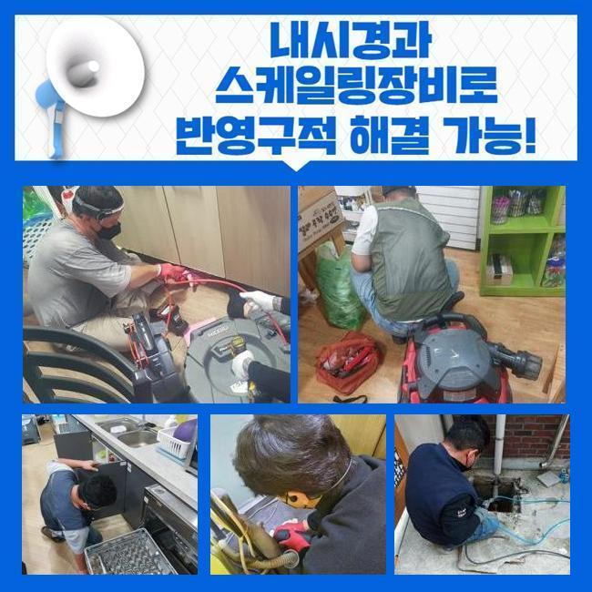
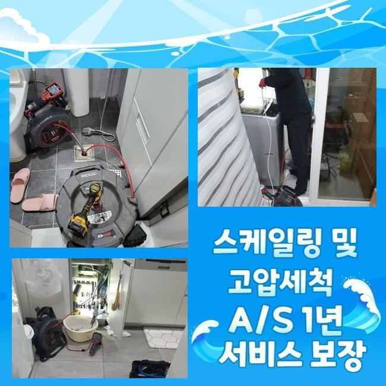
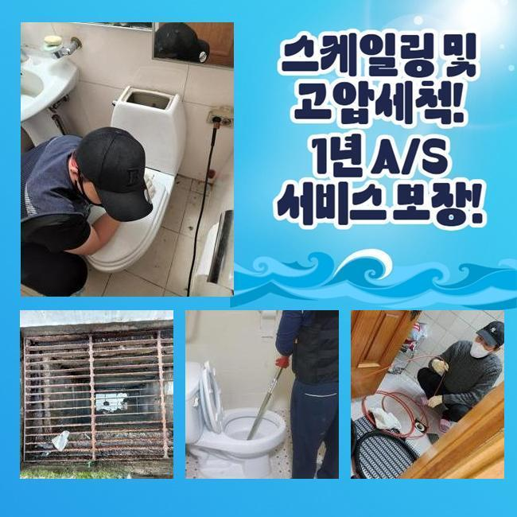
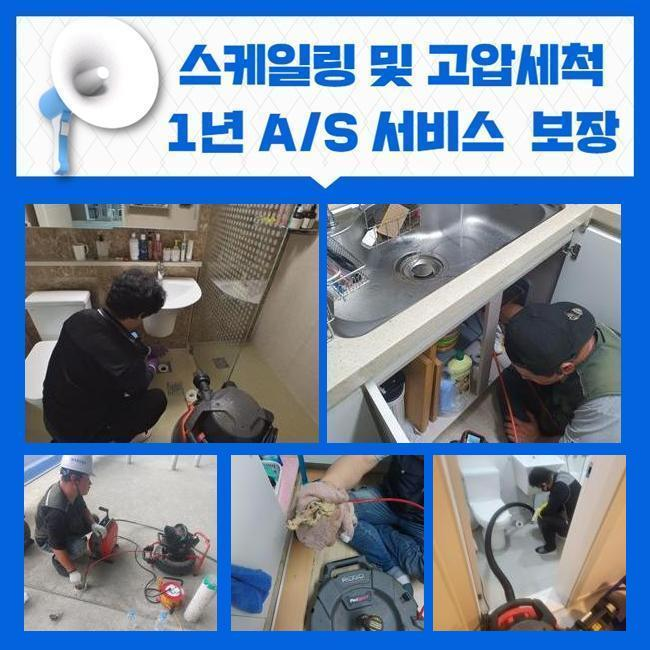
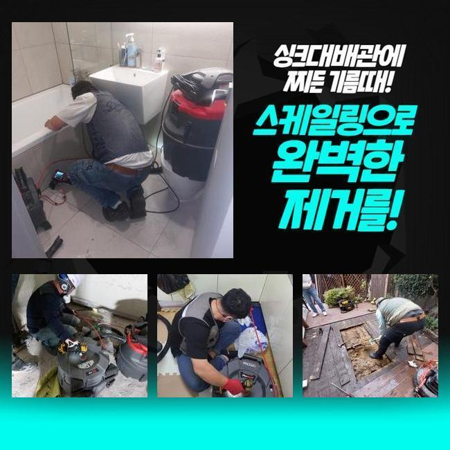
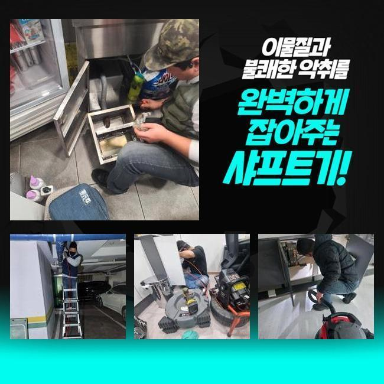

🏠 영등포 양평동세탁실막힘 신길동 악취차단 물샘전문업체
용인 배관막힘 전문 시공 후기

📋 작업 개요
- 위치: 용인
- 서비스 유형: 배관막힘, 누수수리, 배관청소, 고압세척, 악취차단
- 작업 일시: 2025. 4. 13. 3:29
- 업체명: 하수구수사대 (010-5615-2118)
🔍 문제 상황
영등포 양평동세탁실막힘 신길동 악취차단 물샘전문업체
1주일전 배수관이 막혀 스트레스를 받고 계셨던 고객님에게 전화가 들어왔었는데요
의뢰자께서는 배관과 연관된 전문인은 아니셨지만 약간은 지식들은 알고 계셨었죠
의뢰자분은 배수구를 깨끗히하고 막힌 스팟을 찾으려고 둘러보셨으나 어디가 문제인건지 인지하지 못해 저희업체께 의뢰했던 상황이였죠
자택에 찾아뵈었더니 계속된 셀프대처로 고생하신것이 눈에 띄었어요
일반인 입장에서는 명확한 이유에 대해 찾을 수 없는 사례가 대다수입니다
도착하여 하수관을 살피니 안쪽에는 증상은 보이질 않았어요
고객분은 외부하수관에서 까닭이 발현되었을 확률들이 높을거라 생각했죠
더불어 나무등이 자리한 상태라면 땅 밑으로 말리거나 여러 폐기물들이 흐를 여지가있습니다
이것으로 중앙관로가 막히는상황에 노출됩니다

🔎 원인 분석
💡 전문가 진단: 정밀 진단 장비를 사용하여 슬러지의 고착 여부를 판명하고 타격/세척 작업을 실시했습니다.
고객분에게 현상태의 의심하는 까닭을 안내하고 외측을 진단해봐야할 것을 말씀드렸죠
의뢰자께서도 안내드린 내용들을 들으시고 중앙관로의 검사절차에 동의했죠
작업들을 착수하기 이전에 여러 준비들을 거쳤어요
하수시스템 정체의 이유들은 특정이 안돼요
배수설비가 드러나있으면 이런저런 이물질 등 주변에서 유입된 잔재들이 관로로 누적되기 시작해요
더불어 강수상황에 처했을때 외측의 관로등의 실황을 확인하지않을 시 문제들은 갑자기 생길거에요
또한, 나무의 땅 밑으로 들어가는 경우들도 자주 일어나요
배수관을 감싼다거나 더불어 파손을 유발하는 트러블까지 등장하게 만들어요
해당 문제에서는 배수자체가 멈춰버려 막히게되는 상황들이 생기게 될 수 있어요
그밖에 노후이슈가 있다거나 손상에도 배수가 이뤄질 수가 없어서 막힐 수 있어요

🔧 작업 과정
매립시기가 꽤 지나 표면이 약해지면 이물이 누적되는 기반이 갖춰집니다
마지막으로서 보통의 통수오류의 까닭들은 적재적소의 청소들을 신경안써서인데요
때때로 확인하지않을 시, 작은 여러 폐기물들이 쌓이면서 정체가 불거집니다
그래서 외부라인을 그때그때 진단하고 청소해주는게 앞서서 조치하는 합리적인 방식이죠
수많은 기조를 알고서 선제적으로 문제들을 피하는게 1순위에요
내시경장치로 바깥쪽 하수시스템들의 실황을 체크해보았어요
내시경기기로 체크해보았더니 하수관의 군데군데마다 이물들과 기름슬러지로 막혀버린것이 목격되었어요
이와같이 배수관이 막히면 물의 배수가 진행되지를 못해 누수까지 나타나기에 대응을 취하시는게 중요하겠습니다
상태를 보고 잔해물이 누적된 지점을 목표로 해서 청소키로 했답니다
고압수청소를 이용하여 오염된 관로를 구석구석 세척했습니다
물줄기들이 슬러지를 심층부에서 제거시키니 정체현상을 보이던 하수들이 빠져나왔어요
입구쪽에서부터 고여있던 오수들이 배출됐고 잔해물이 빠지며 시간이 흐름에 따라 조속히 복구되기에 이르렀습니다
물이 원활히 빠지는 형상을 관찰하며 고객분도 모든 절차를 관찰하셨어요
이물제거가 수행되면서 고객분과 얘기하면서 여러 폐기물들이 쌓이는 까닭들을 말했더니 의뢰인분도 궁금하셨던 내용을 질문했어요
이로인해 고객분은 관리를 해주는것의 비중을 이해함과 동시에 추후에도 주기적인 검수의 불가피함을 깨닫게 되셨다 합니다
성황리에 청소가 끝나고 하수관로가 완전히 복구되며 의뢰자께서는 통수되는 모습도 확인했습니다


✅ 작업 완료
고객에게도 결과들에 대해 일러드리고 지속적으로의 관리방식들도 설명했죠
때때로 밖의 배관실태를 살피고 필요 시 전문가들의 대책을 염두에 두는게 좋은 방법이라고 설명드렸죠
결과적으로 고객님에게서 고민을 해결해드려서 안심했습니다
여러분의 수월한 배수상황에 보탬으로 다가설수있게 때에 맞춰 저희쪽으로 상담을 진행해보세요



⚠️ 베란다 누수 및 방수 관리 방법
- ✅ 비가 많이 올 때 창틀 주변이나 아래층 천장에 얼룩이 생기는지 정기적으로 확인해 보세요.
- ✅ 우수관 주변 실리콘 마감이 들뜨거나 깨진 틈새가 있는지 손상 여부를 수시로 체크하세요.
- ✅ 베란다 바닥 타일의 줄눈(메지)이 소실되면 그 틈으로 물이 침투하여 누수가 유발됩니다.
- ✅ 누수 의심 증상 발견 시 방치하면 아래층 손실이 커지므로 즉시 전문가의 진단을 받으십시오.
💡 핵심 정리
- 확실한 장비 작업(내시경 점검 및 샤프트 스케일링)으로 원인을 뿌리 뽑습니다.
- 작업 후 1년 이내에 동일한 부위 재발 시 100% 무상 A/S 서비스를 보장합니다.
- 서울 · 경기 · 인천 전 지역에 24시간 언제든 긴급 출동할 수 있도록 항시 대기 중입니다.
❓ 자주 묻는 질문 (FAQ)
🚨 용인 배관막힘 문제로 고민이신가요?
정확한 원인 진단과 확실한 시공으로 재발 없는 해결을 약속드립니다.
24시간 긴급 출동 | 서울 · 경기 · 인천 전지역 | 1년 내 재발 시 무상 A/S